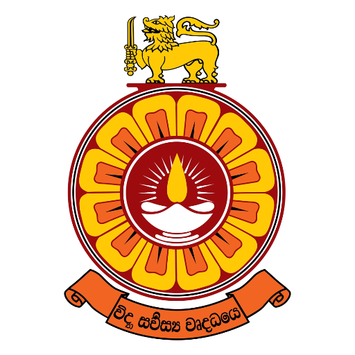

THE OPEN UNIVERSITY OF SRI LANKA

HISTORY OF THE OPEN UNIVERSITY OF SRI LANKA
- 1980: Established under the Universities Act No. 16 of 1978 and Open University Ordinance No. 1 of 1980.
- 1980: Founded as the premier open and distance learning (ODL) institute in Sri Lanka.
- 1987: Formally inaugurated its main campus in Nawala, Nugegoda.
- Present: Expanded with regional and study centers island-wide, offering flexible higher education options.
AVAILABLE FACULTIES
- Faculty of Engineering Technology – ඉංජිනේරු තාක්ෂණ පීඨය
- Faculty of Education – අධ්යාපන පීඨය
- Faculty of Humanities and Social Sciences – මානවශාස්ත්ර හා සමාජීයවිද්යා පීඨය
- Faculty of Natural Sciences – ස්වාභාවික විද්යා පීඨය
- Faculty of Health Sciences – සෞඛ්ය විද්යා පීඨය
- Faculty of Management Studies – කළමනාකරණ අධ්යයන පීඨය
- Faculty of Graduate Studies – පශ්චාත් උපාධි අධ්යයන පීඨය
GO TO OFFICIAL WEBSITE OF THE OPEN UNIVERSITY
GO TO HOME PAGE